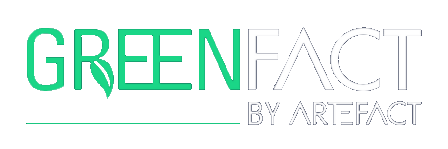

ARTEFACT s'intéresse grandement à son développement durable pour accroître économiquement en diminuant au maximum ses externalités négatives sur l'environnement.
L'entreprise a donc créée un groupe GreenFact dirigé par tois personnes responsables de fédérer les énergies et de mettre en place un plan sur deux ans afin de réduire les émissions de carbone.
Pourquoi ?
ARTEFACT partage la sensibilation et les principes éthiques avec leurs employés à travers le développement d'une culture d'entreprise durable.
Etre une entreprise responsable est un point important pour attirer et retenir les talents de demaine.
ARTEFACT a donc conscience que l'entreprise doit élargir sa vision afin de répondre à l'évolution des besoins mondiaux.
Comment ?
ARTEFACT possède une équipe multidiplicinaire, engagée et fait appel à des bénévoles au sein de GreenFact qui sont prêts à travailler avec des experts dans le but de créer, mettre en œuvre et mesurer des solutions concrètes.
ARTEFACT bénéficie également d'un nouveau partenariat avec Atiko (société spécialisée dans le calcul et la réduction de l'empreinte carbone).
Ils construisent ensemble le premier tableau de bord des émissions de carbone pour la France sur la base des données de 2019.
La suite ?
Le but de l'entreprise est de déterminer quelles activités peuvent-être améliorées.
Après avoir développé et testé une une méthodologie, ARTEFACT la met en œuvre dans différents pays afin que les entreprises issues d'ARTEFACT puissent toutes contribuer à un programme mondial de durabilité GreenFact.